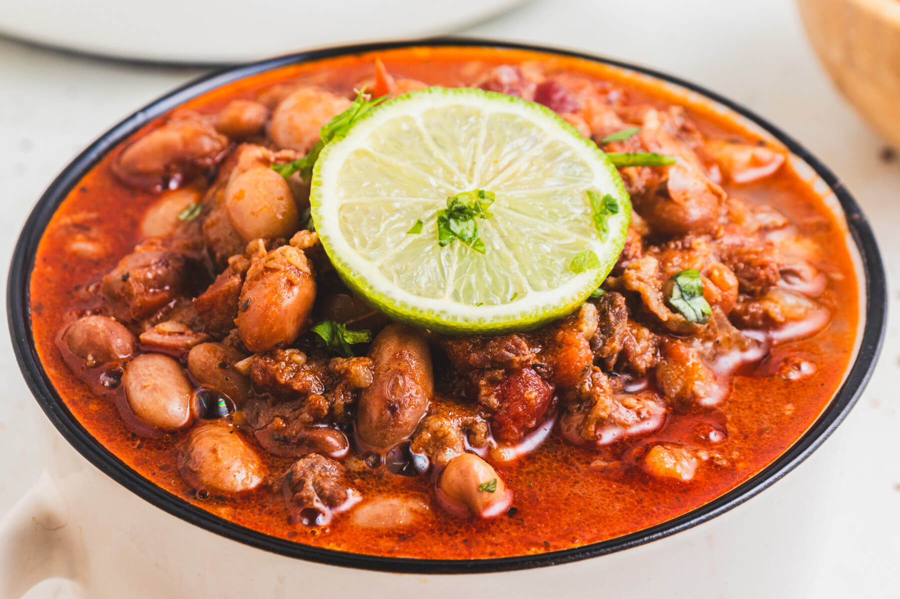

Frijoles Charros
Home

Description
Frijoles Charros, or Mexican Charro Beans, are a hearty Mexican bean soup featuring tender pinto beans, smoky bacon, and fiery chorizo sausage in a tomato-based broth. With savoury layers from aromatics and warm notes from traditional spices, this fiesta in a bowl is not your average pot of beans. It's satisfying, flavourful, and perfect with a side of crusty bread for dipping.
Ingredients
- Pinto Beans
- Olive Oil
- Bacon
- Chorizo Sausage
- Onion
- Ground Cumin
- Chili Powder
- Dried Oregano
- Diced Tomatos
- Salt
- Black Pepper
- Bay Leaves
- Beef Stock
Steps
- Begin by cooking the bacon and chorizo. Heat the olive oil in a Dutch oven or large pot over medium heat. Add the bacon and cook until crispy, about 5 minutes. Crumble the chorizo into the pot and continue cooking until browned, approximately another 5 minutes.
- Remove the chorizo and bacon from the pot and set aside.
- Next, sauté the aromatics in the same pot. Add the diced onion to the pot and cook until it becomes soft and translucent, about 5 minutes. Add the minced garlic and cook for another minute.
- Replace the cooked bacon and chorizo in the pot. Stir in the ground cumin, chili powder, oregano, salt, and bay leaf. Cook for 1 minute, or until fragrant. Do not allow the spices to burn.
- Finally, pour in the beef broth (or chicken broth) and the diced tomatoes into the pot, then add the soaked pinto beans. Season with freshly ground black pepper.
- Bring bean mixture to a boil, then reduce heat, cover with a lid, and simmer for 25-30 minutes, or until the beans are tender. If needed, add 1 cup hot liquid (water or more stock) and continue cooking until the beans are soft but not falling apart.
- Garnish Frijoles Charros with chopped fresh cilantro and serve hot with tortillas, rice, and your favourite toppings.